Основные операции пространственного анализа
В этом разделе и далее мы будем использовать преимущественно слой в системе координат UTM в нужной вам зоне.
Расчет площадей объектов
Для расчета площади зданий воспользуемся калькулятором полей в таблице атрибутов.
Таблица атрибутов может быть открыта из контекстного меню слоя.
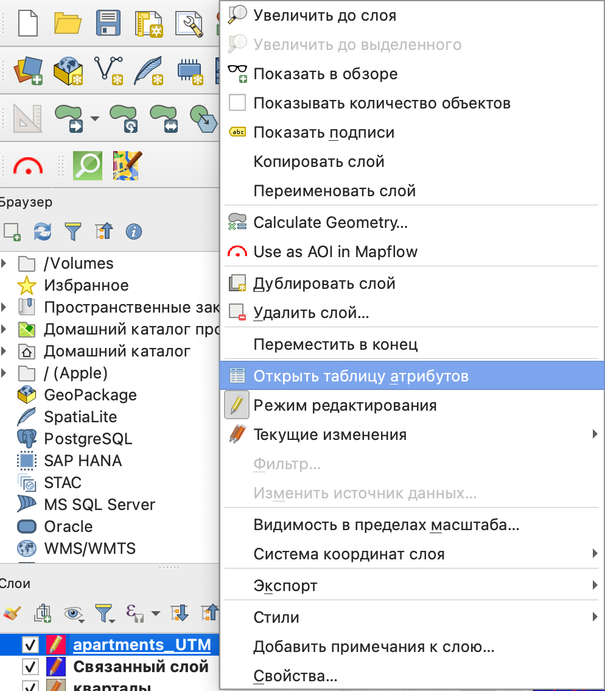
Расчет площади мы будем осуществлять в том слое, который вы получили по итогам перепроецирования: слой в системе координат UTM.
В открывшейся таблице атрибутов вы увидите собственную панель инструментов, на которой вам нужен калькулятор полей.

В открывшемся окне калькулятора полей вам нужно создать новое поле с типом данных “десятичное число”, в которое будет записан ваш результат.
Для расчета площади необходима будет одна из функций из группы Геометрия: area().
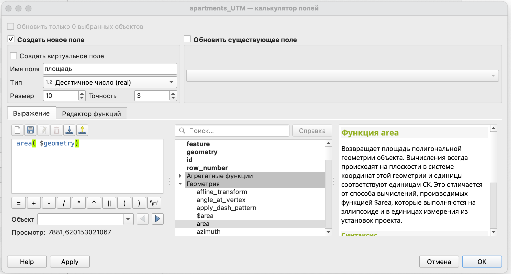
Само выражение:
area ($geometry)Что значит аргумент $geometry в скобках?
Это говорит о том, что для расчета будет использована не какая-то конкретная геометрия одного объекта, а все геометрии слоя.
Обратите внимание, что у нас есть две функции для расчета площади:
$area- расчет площади осуществляется в системе координат проекта на эллипсоиде;area()- расчет площади осуществляется в системе координат слоя на плоскости.
Мы используем здесь второй вариант, так как нам необходим расчет именно в системе координат слоя. Для этого мы его и перепроецировали.
В результате вычисления вы получите новое поле, в которое будет записана площадь.
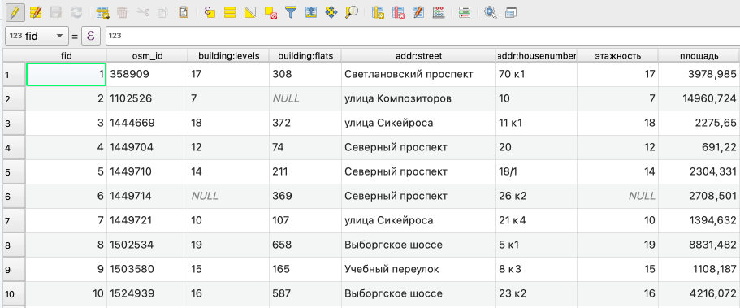
В нашем случае площадь будет рассчитана в квадратных метрах, так как мы использовали систему координат слоя, в которой единицами измерения являются метры.
Это площадь застройки здания, то есть площадь по контуру первого этажа.
Вы можете аналогично рассчитать периметр здания, воспользовавшись функцией perimeter.
Общая площадь здания может быть рассчитана как произведение уже рассчитаной вами площади и количества этажей.
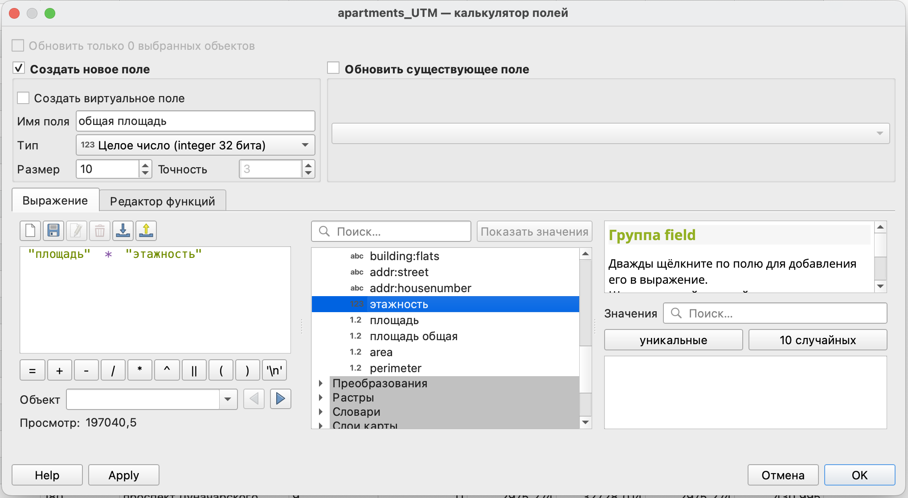
Вы можете указать это выражение в свойствах слоя в пункте Формы полей, тогда при создании нового объекта площадь для него будет рассчитаваться автоматически.
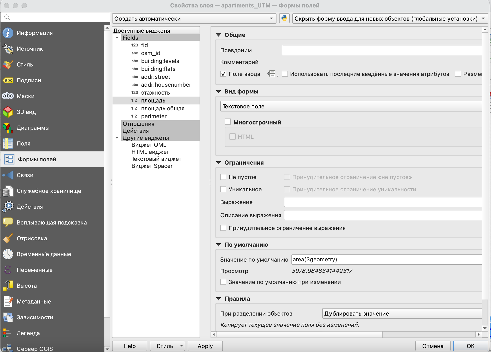
Это будет работать для любого вашего вычисляемого поля.
Для простоты вычислений вы также можете воспользоваться модулем Calculate geometry.
Он будет доступен в контекстном меню слоя.
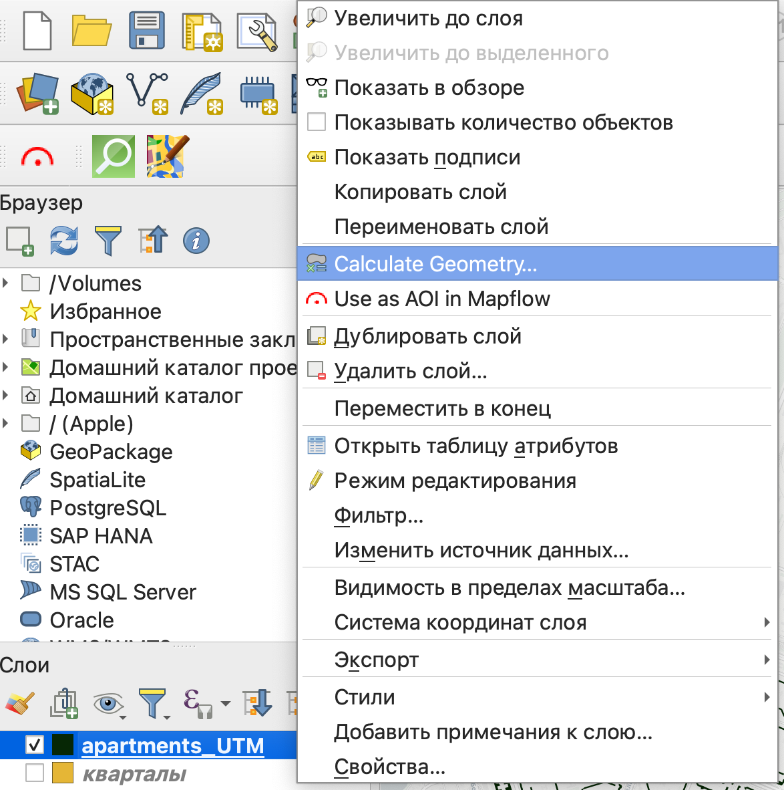
Модуль позволяет вычислять основные геометрические параметры без использования выражений и калькулятора полей.
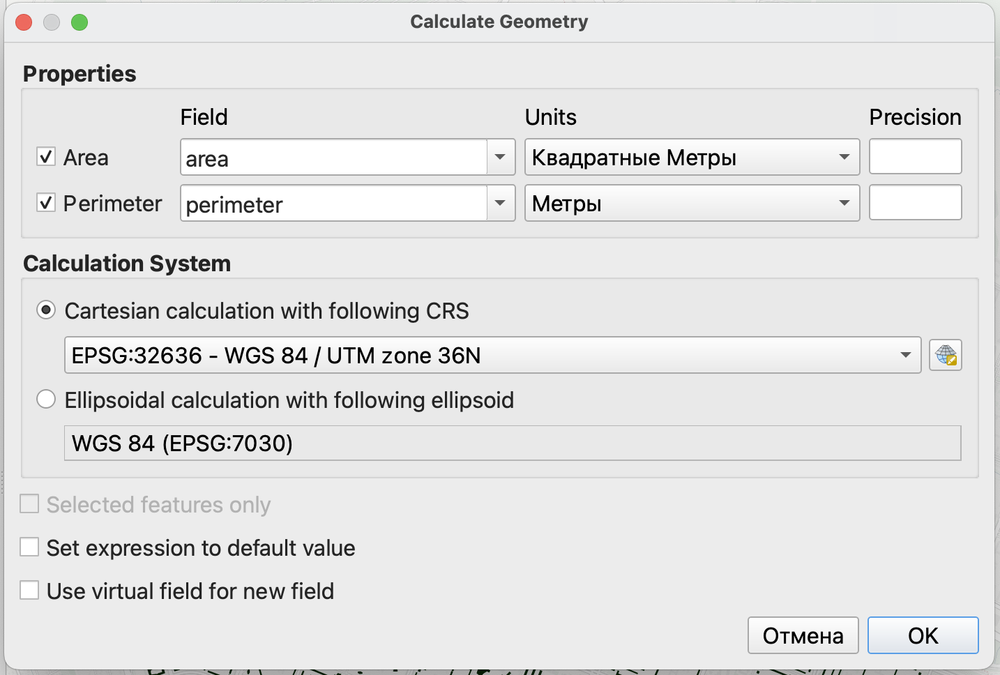
Кроме того, здесь вы можете в явном виде выбирать в какой системе координат и как осуществлять вычисления (на плоскости или на эллипсоиде).
Создание буферных зон
Буферная зона - это область на карте, каждая точка внутри которой находится в пределах заданного расстояния от исходного объекта.
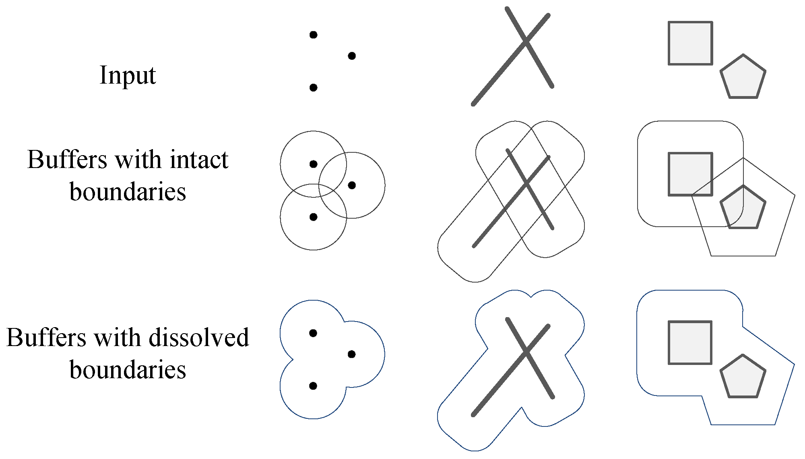
Буферные зоны - это один из тех инструментов, которые зависимы от системы координат исходного слоя. То есть размер буфера может быть задан только в единицах измерения слоя.
Для создания буферных зон есть одноименный инструмент Буферизация в панели инструментов анализа.
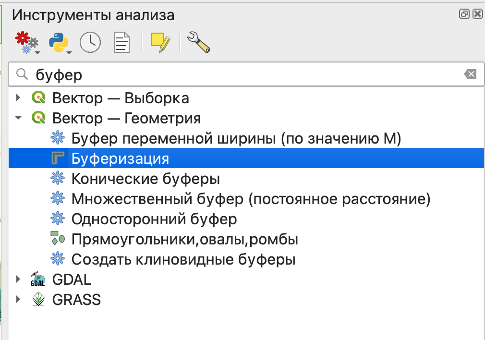
Как видите, у нас есть несколько очень похожих инструментов, мы с вами будем пользоваться самым простым из них.
Что же делают остальные?
буфер переменной ширины - размер буферной зоны будет зависеть от величины какого-то показателя;
множественный буфер - создание сразу нескольких буферных зон с определенным шагом по расстоянию;
конические буферы (на самом деле клиновидные) - буфер для линейного объекта с разными значениями размера в начале и конце линии;
односторонний буфер - создание буфера только с одной стороны линейного объекта;
создать клиновидные буферы - создание буферов в форме сектора круга от точечных объектов.


Пространственное агрегирование
Возможность пространственного агрегирования может быть реализована как минимум двумя способами: с использованием инструментов панели анализа и с испольованием функции агрегирования в калькуляторе полей.
В панели инструментов анализа есть две функции: Объединение атрибутов по расположению и Объединение атрибутов по расположению (сводка). Первая из них присваивает значение атрибута одних векторных объектов другим на основе их взаимного расположения относительно друг друга. Например, у нас есть слой со зданиями и слой с магазинами, у которых есть атрибут с названием, мы можем с использованием этой функции присвоить зданию название магазина, который в нем расположен.
Сводка позволяет получить не просто значение атрибута, а его статистическую сводку (среднее, медиану, максимальное и минимальное значения и прочее).
Оверлейные операции
| Название | Описание | Логический оператор | Графическое представление |
| Пересечение | Результат включает в себя общие части объектов разных слоев. Например, какие области попадают в зону затопления и зону застройки |
AND | 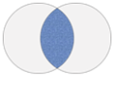 |
| Разница | Результат включет в себя только части объектов одного слоя, не совпадающие с объектами другого слоя. Например, какие области попадают в зону затопления, но не попадают в зону застройки? |
NOT | 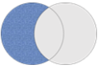 |
| Объединение | Результатом будут являться части объектов обоих слоев, как совпавшие, так и нет. Другими словами результирующие объекты будут соответствовать хотя бы одному из условий. В этом случае дополнительно происходит рассечение объектов одного слоя объектами другого слоя. Например, какие области попадают или в зону затопления или в зону застройки. |
OR | 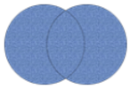 |
| Симметрическая разность | Результат будет включать в себя несовпадающие части объектов разных слоев. Например, какие области не попадут ни в зону затопления, ни в зону застройки? |
XOR | 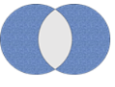 |